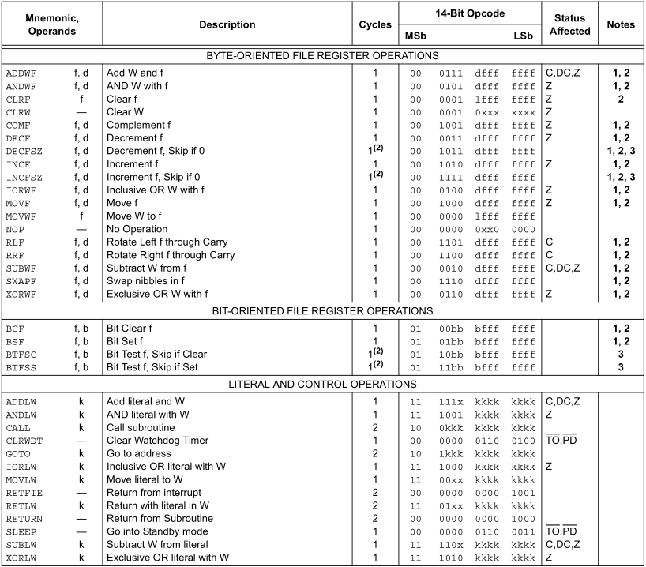
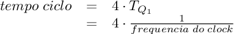
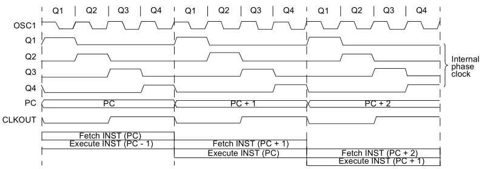
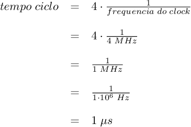
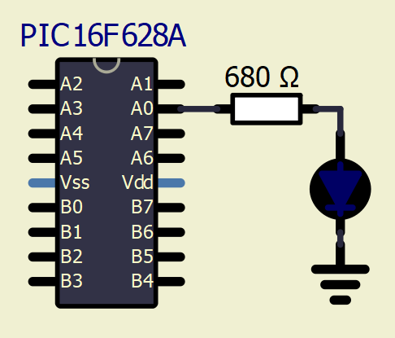

Episódio 10: Exemplo 2 - Criando delay no PIC16F628A
Aqui neste episódio se abordará o processo para “pausa” na execução de algumas tarefas desejadas
No microcontrolador existem duas formas de “parar” de fazer algo que afeta o computador, sendo que a primeira é via instrução NOP ou pela instrução SLEEP que será vista no episódio 26. Aqui, veremos uma pausa por certo tempo, assim precisamos entender de ciclo de instrução.
A Figura 10.1 exibe as instruções e seus devidos ciclos.
| Figura 10.1 - Conjunto de instruções do PIC16F628A |
|---|
|  |
| Fonte: MICROCHIP 2020 (b) página 117 |
O microcontrolador PIC16F628A executa cada instrução em um (ou dois, dependendo da instrução) ciclo e cada ciclo de instrução consome é dada pela equação, em segundos, da Figura 10.2.
| Figura 10.2 - Tempo de execução de um ciclo no PIC16F628A |
|---|
|  |
| Fonte: Próprio autor (2020) |
Conforme datasheet do PIC16F628A na seção "3.2 Instruction Flow/Pipelining", uma instrução consiste de quatro ciclos Q (Q1, Q2, Q3 e Q4) onde a instrução é buscada e executada em cada ciclo de instrução, isto é, enquanto uma instrução está sendo buscada a seguinte que já foi buscada está sendo executada e isto é considerada na Figura 10.3 (Figura 2.10 sobre Clock e ciclo de instrução) onde se tem quatro tempos Q1 a Q4.
| Figura 10.3 - Ciclo de clock e instrução de execução do PIC16F628A |
|---|
|  |
| Fonte: MICROCHIP 2020 (b) página 15 |
Por exemplo, a instrução NOP consome 1 ciclo de instrução conforme Figura 10.1. Assim, para uma frequência de clock de 4 MHz, o tempo de execução de uma instrução NOP é de 1 μs, conforme Figura 10.4 e seção "15.1 Read-Modify-Write Operations" do datasheet do PIC16F628A.
| Figura 10.4 - Tempo de execução da instrução NOP |
|---|
|  |
| Fonte: Próprio autor |
Agora se a frequência do clock for de 16 MHz ou 20 MHz a mesma instrução terão o tempo de execução de 250 ns e 200 ns respectivamente
Com essas informações pode-se projetar delay, baseando na quantidade de ciclos executados e na frequência de clock utilizada no microcontrolador.
Vamos aos exemplos usando como base a frequência de clock igual a 4 MHz, logo cada ciclo é executado em 1 μs
EXEMPLO 10.1 - Neste exemplo queremos criar um delay de 100 μs, no qual se usa a frequência de clock de 4 MHz no microcontrolador. Pelo comentado anteriormente, se o clock do PIC16F628A é de 4 MHz, temos que cada ciclo de instrução é executado em 1 μs, e como queremos 100 μs, decorre que precisamos de “consumir” 100 ciclos. O Código 10.1 exibe uma solução para esta proposta de delay de 100 μs.
| Código 10.1 - Exemplo de delay de 100 μs |
|---|
|
| Fonte: Autor 2020 |
Pelo Código 10.1 pode ser feita a seguinte análise baseada na Tabela 10.1.
| Tabela 10.1 - Análise dos ciclos de execução das instruções do Código 10.1 | ||||||||||||||||||||||||||||
|---|---|---|---|---|---|---|---|---|---|---|---|---|---|---|---|---|---|---|---|---|---|---|---|---|---|---|---|---|
|
||||||||||||||||||||||||||||
| Fonte: Próprio autor (2020) |
EXEMPLO 10.2 - Neste exemplo queremos criar um delay de 1000 μs (1 ms), no qual usando a frequência de clock de 4 MHz, teremos que 1000 μs é igual a 1000 ciclos. Vejamos o Código 10.2 esse delay.
| Código 10.2 - Exemplo de delay de 1000 μs (1 ms) |
|---|
|
| Fonte: Autor 2020 |
Pelo Código 10.2 pode ser feita a seguinte análise baseada na Tabela 10.2.
| Tabela 10.2 - Análise dos ciclos de execução das instruções do Código 10.2 | ||||||||||||||||||||||||||||
|---|---|---|---|---|---|---|---|---|---|---|---|---|---|---|---|---|---|---|---|---|---|---|---|---|---|---|---|---|
|
||||||||||||||||||||||||||||
| Fonte: Próprio autor (2020) |
Agora vejamos exemplos de loops em 1, 2 e 3 níveis para que possamos calcular tempos. Vejamos o Exemplo 10.3, Exemplo 10.4 e Exemplo 10.5 que tratarão de equacionar esses tempos
Exemplo 10.3 - Loop com 1 nível
| Código 10.3 - Exemplo de delay com 1 nível |
|---|
|
| Fonte: Autor 2020 |
Assim, o total de ciclos para o Exemplo 10.3 é dada por:
| TOTAL CICLOS | = 2 ciclos + valor * 1 ciclo + (valor - 1) * 2 ciclos |
| = 2 ciclos + valor * 1 ciclo + valor * 2 ciclos - 1 * 2 ciclos | |
| = 3 * valor [ciclos] |
Assim, pelo Código 10.3, tem-se que o valor armazenado no registrador de endereço 0x20 é 25010. Logo o total de ciclos é calculado como:
| TOTAL CICLOS | = 3 * valor [ciclos] |
| = 3 * 250 [ciclos] | |
| = 750 [ciclos] |
Na linha 5 (linha 4 do comentário) do Código 10.3, foi colocado reticências para dizer que podem haver mais instruções. Assim se houver n instruções de 1 ciclo de instrução entre as 4 e 7 (linhas 3 e 6 do comentário) Código 10.3, a expressão de TOTAL CICLOS ficará:
| TOTAL CICLOS | = 2 ciclos + n * valor * 1 ciclo + valor * 1 ciclo + (valor -1) * 2 ciclos |
| = 2 ciclos + valor * n * 1 ciclo + valor * 1 ciclo + valor * 2 ciclos - 1 * 2 ciclos | |
| = valor * n ciclos + 3 * valor ciclos | |
| = (3 + n) * valor [ciclos] |
Assim, se utilizarmos duas instruções NOP entre as linhas 4 e 7 do Código 10.3, teremos um total de :
| TOTAL CICLOS | = (3 + n) * valor [ciclos] |
| = (3 + 2) * 250 [ciclos] | |
| = 1250 [ciclos] |
Agora veremos o Exemplo 10.4 o qual tratará de delay com 2 níveis, isto é, duas estruturas de repetição no código.
Exemplo 10.4 - Neste exemplo veremos um delay com loop com 2 níveis, como forma de aumentar o intervalo de tempo consumido. Veja o Código 10.4 o qual tem a implementação para esse delay fazendo uso de dois valores: 1010 e 20010.
| Código 10.4 - Exemplo de delay com dois níveis |
|---|
|
| Fonte: Autor 2020 |
Assim, pela Tabela 10.3, pode-se ver a análise da quantidade de ciclos utilizados nesta rotina de delay.
| Tabela 10.3 - Análise dos ciclos de execução das instruções do Código 10.4 | |||||||||||||||||||||||||||
|---|---|---|---|---|---|---|---|---|---|---|---|---|---|---|---|---|---|---|---|---|---|---|---|---|---|---|---|
|
|||||||||||||||||||||||||||
| Fonte: Próprio autor (2020) |
Assim, o total de ciclos para o exemplo é dada por:
| TOTAL CICLOS | = 4 ciclos + valor1 * 1 ciclo + 255 * 1 ciclo * valor2 + |
| + (valor1 - 1) * 2 ciclos + 254 * 2 ciclos * valor2 + | |
| + valor2 * 1 ciclo + (valor2 - 1) * 2 ciclos | |
| = 4 + valor1 + 255 * valor2 + 2 * valor1 - 2 + 508 * valor2 + | |
| + valor2 + 2 * valor2 - 2 | |
| = 3 * valor1 + 766 * valor2 [ciclos] |
Para o Código 10.4, o total de ciclos será de:
| TOTAL CICLOS | = 3 * valor1 + 766 * valor2 [ciclos] |
| = 3 * 10 + 766 * 200 [ciclos] | |
| = 153230 [ciclos] |
E por último, veremos um exemplo de loop com 3 níveis. Nesta série, baseamos os cálculos em apenas 3 níveis, mas o leitor pode estender isso para mais níveis, aumentando gradualmente o intervalo de delay.
Exemplo 10.5 - Neste exemplo veremos um loop com 3 níveis, que será o maior utilizado e comentado nos nossos exemplos desta série. Os valores usados neste exemplo são: 1010, 20010 e 13310.
| Código 10.5 - Exemplo de delay com três níveis |
|---|
|
| Fonte: Autor 2020 |
Assim, baseado no Código 10.5, constrói-se a Tabela 10.4 a qual faz a análise do total de ciclos deste fragmento de código.
| Tabela 10.4 - Análise dos ciclos de execução das instruções do Código 10.5 | |||||||||||||||||||||||||||||||||||||||
|---|---|---|---|---|---|---|---|---|---|---|---|---|---|---|---|---|---|---|---|---|---|---|---|---|---|---|---|---|---|---|---|---|---|---|---|---|---|---|---|
|
|||||||||||||||||||||||||||||||||||||||
| Fonte: Próprio autor (2020) |
Com isso, o total de ciclos é dada por:
| TOTAL CICLOS | = 4 + valor1 + 255 * valor2 * valor3 + (valor1 - 1) * 2 + |
| + 254 * valor2 * valor3 * 2 + valor2 + 255 * valor3 + | |
| + (valor1 - 1) * 2 + 254 * valor3 * 2 + valor3 + | |
| + (valor3 - 1) * 2 | |
| = -2 + 3 * valor1 + 3 * valor2 + (763 * valor2 + 766) * valor3 |
Logo, para o Código 10.5 tem-se que o total de ciclos é igual a:
| TOTAL CICLOS | = -2 + 3 * valor1 + 3 * valor2 + (763 * valor2 + 766) * valor3 |
| = -2 + 3 * 10 + 3 * 200 + (763 * 200 + 766) * 133 | |
| = 20398306 [ciclos] |
Se neste exemplo a frequência do clock do PIC16F628A for de 4 MHz, esse delay será de 20398306 μs, que é aproximadamente, 20 segundos.
No Exemplo 10.3, Exemplo 10.4 e Exemplo 10.5 vimos que pelo padrão gerado, temos associado as seguintes equações na Tabela 10.5.
| Tabela 10.5 - Quantidade de ciclos em função da quantidade de níveis | ||||||||
|---|---|---|---|---|---|---|---|---|
|
||||||||
| Fonte: Próprio autor (2020) |
Assim, para os níveis 2 e 3 podem-se ter várias combinações de n1, n2 e n3 que geram a mesma quantidade de ciclos totais. Sabendo que tanto n1, n2, n3 e a quantidade de ciclos são números naturais (número inteiro positivo ou nulo), precisamos resolver a equação dada a quantidade total de ciclos desejada.
Exemplo 10.6 - Neste exemplo desejamos a quantidade de 2783 ciclos, 700 ciclos e 196095 ciclos para loop em dois níveis. Para isso, temos que encontrar quais são os valores inteiros n1 e n2 que produzem um resultado próximo de 2873 ciclos, 700 ciclos e 196095 ciclos.
Resolução: Para começar a resolução temos que procurar saber quanto o maior parte (766) cabe dentro de cada um e o que sobrar veja quanto cabem a outra parte O importante é saber que n1 e n2 deve estar entre 0 (incluindo) e 255 (incluso também). Vejamos os cálculos:
| 2783 | = | 3 * 766 + 485 |
| 485 | = | 161 * 3 + 2 |
| 2783 | = | (3 * 161) + (766 * 3) + 2 |
e com isso
| 0 | ≤ | n1=161 | ≤ | 255 |
| 0 | ≤ | n2=3 | ≤ | 255 |
e os dois ciclos restantes podem ser conseguidos por duas instruções NOP ou uma instrução GOTO $+1 ao final da estrutura de repetição.
| 700 | = | 0 * 766 + 700 |
| 700 | = | 233 * 3 + 1 |
| 700 | = | (3 * 233) + (766 * 0) + 1 |
e com isso
| 0 | ≤ | n1=233 | ≤ | 255 |
| 0 | ≤ | n2=0 | ≤ | 255 |
Esse um ciclo faltante pode ser conseguido por uma instrução NOP.
| 196095 | = | 255 * 766 + 765 |
| 765 | = | 255 * 3 + 0 |
| 196095 | = | (3 * 255) + (766 * 255) + 0 |
e com isso
| 0 | ≤ | n1=255 | ≤ | 255 |
| 0 | ≤ | n2=255 | ≤ | 255 |
Neste exemplo pode-se ver que a maior quantidade de ciclos obtidos sem modificação do exemplo 4 é de 196095 ciclos, porém esta quantidade pode ser aumentada adicionando instruções dentro da estrutura de repetição do exemplo 10.4.
Agora vejamos o exemplo 10.7 no qual cria-se um pisca-pisca com tempo aproximado de 1 segundo ligado e 500 milisegundos desligado.
Exemplo 10.7 - Seja o circuito da Figura 10.5 no qual deseja-se que o LED fique aceso por aproximadamente 1 segundo e fique apagado 0.5 segundo. O PIC16F628A está usando o oscilador interno de 4 MHz. O processo deve ser repetido continuamente, produzindo um pisca-pisca.
| Figura 10.5 - Circuito para pisca-pisca |
|---|
|  |
| Fonte: Próprio autor(2021) |
Para a resolução deste exemplo precisamos calcular os valores de n1, n2 e n3 da expressão -2 + 3 * n1 + 3 * n2 + 763 * n2 * n3 + 766 * n3, pois como visto no exemplo 10.6, a expressão 3 * n1 + 766 * n2 gera no máximo a quantidade de 196095 ciclos de máquina.
Como a frequência do clock é de 4 MHz, cada ciclo de instrução é de 1 μs, então para:
Portanto para:
| -2 + 3 * n1 + 3 * n2 + 763 * n2 * n3 + 766 * n3 | = | 1.000.000 | ||
| -2 + 3 * n1 + 3 * n2 + 763 * n2 * n3 + 766 * n3 | ≤ | 1.000.000 | ||
onde n1 = 17, n2 = 9 e n3 = 131, obtendo o valor de:
| -2 + 3 * n1 + 3 * n2 + 763 * n2 * n3 + 766 * n3 |
| -2 + 3 * 17 + 3 * 9 + 763 * 9 * 131 + 766 * 131 |
| -2 + 51 + 27 + 899577 + 100346 |
| 999999 |
Importante: Usei o SciLab para encontrar a solução usando o seguinte código abaixo disponível em https://www.scilab.org/sites/default/files/Scilab_Optimization_201109.pdf e feitas algumas modificações. As documentações são encontradas em:
Por usar algoritmo genético, a população inicial é criada aleatóriamente, por isso, tente várias vezes até obter os valores que mantém a desigualdade válida.
// Objective function
// mininum values to variables n1, n2 and n3 to get
// number cycles less than 1000000
function y = objectiveFunctionVector( n1, n2, n3 )
y = ( ( -2 + 3 * n1 + 3 * n2 + 763 * n2 * n3 + 766 * n3 ) - 1000000 ).^2;
endfunction
function y = objectiveFunction( n )
y = objectiveFunctionVector( n(1), n(2), n(3) );
endfunction
function y = objectiveFunctionBinary( n )
BinLen = 8;
lb = [0;0;0];
ub = [255;255;255];
tmp = convert_to_float( n, BinLen, ub, lb );
y = objectiveFunction( tmp );
disp( tmp );
endfunction
// 2. Compute the optimum.
PopSize = 1000;
Proba_cross = 0.7;
Proba_mut = 0.1;
NbGen = 1000;
Log = %T;
gaprms=init_param();
gaprms=add_param(gaprms,"minbound",[0;0;0]);
gaprms=add_param(gaprms,"maxbound",[255;255;255]);
gaprms=add_param(gaprms,"dimension",3);
gaprms=add_param(gaprms,"binary_length",8);
gaprms=add_param(gaprms,"crossover_func", crossover_ga_binary);
gaprms=add_param(gaprms,"mutation_func", mutation_ga_binary);
gaprms=add_param(gaprms,"codage_func", coding_ga_binary);
gaprms=add_param(gaprms,"multi_cross",%T);
[npopopt,fpopopt,xpop0,fpop0] = optim_ga(objectiveFunctionBinary,PopSize, NbGen,Proba_mut,Proba_cross,Log,gaprms);
| -2 + 3 * n1 + 3 * n2 + 763 * n2 * n3 + 766 * n3 | = | 500.000 | ||
| -2 + 3 * n1 + 3 * n2 + 763 * n2 * n3 + 766 * n3 | ≤ | 500.000 | ||
onde n1 = 113, n2 = 2 e n3 = 218, obtendo o valor de:
| -2 + 3 * n1 + 3 * n2 + 763 * n2 * n3 + 766 * n3 |
| -2 + 3 * 113 + 3 * 2 + 763 * 2 * 218 + 766 * 218 |
| -2 + 339 + 6 + 332668 + 166988 |
| 499999 |
Assim, o Código 10.5 exibe um exemplo de uso de delay com três níveis.
| Código 10.6 - Exemplo do uso da instrução NOP |
|---|
|
| Fonte: Autor 2020 |